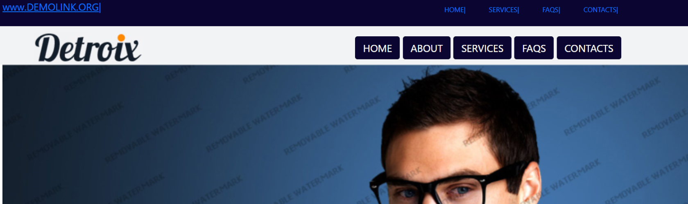
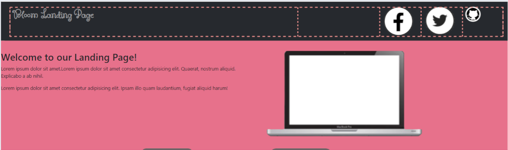
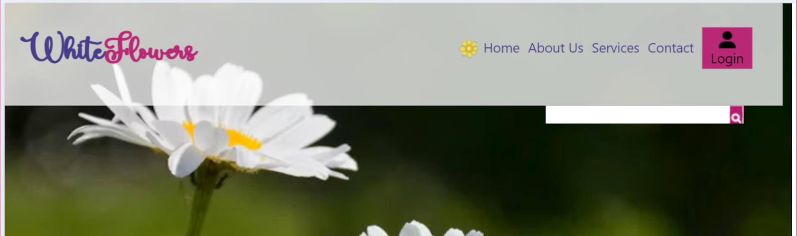
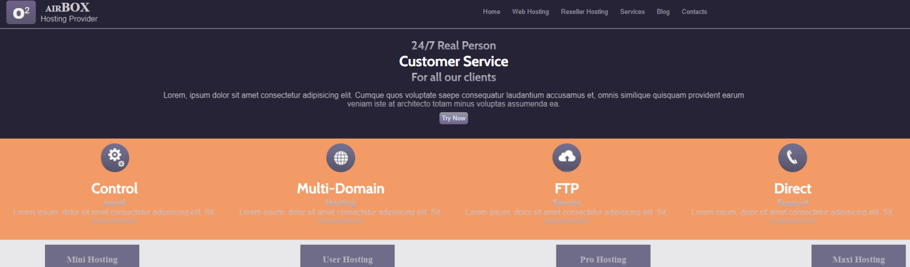

Detroix

Bloom Landing Page

White Flowers

Airbox
On this project I learned at attach background images, to make linear gradients, getting colors from Photopea and to turn div's into circles.
This project includes a side bar menu for smaller screens and a glass effect with overlays. just click on the flowers to open and close the navigation bar.
Learning about how to align Bootstrap rows and columns, was the focus of this project. We also learned about using icons for social media links.
This template had a triangle overlay element that was tricky and learned how to do an exponent for the oxygen box logo. I also learned about flex propeties.
Credits:glitch-Kevin Powell,round buttons-Michael Valencia, 3d button-John Brown